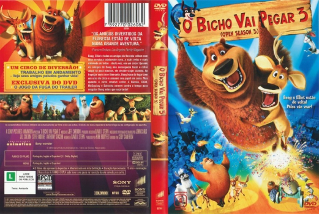

Outro Título:Open Season 3
País:United States, 75 minutos
Idiomas falados:Espanhol, Inglês, Português
Gênero(s):Aventura, Animação, Família, Comédia
Diretor(s):Cody Cameron
Escritor(es):David I. Stern
Codec:MPEG-2 (DVD)
Número: 5834


Certificado:L
Sinopse:
Decepcionado com sua turma, que prefere cuidar das obrigações familiares a participar de sua viagem anual, Boog parte sozinho e acaba dentro de um picadeiro de circo. Ao trocar de lugar com um artista e se apaixonar por uma russa, ele aprende que talvez não seja preciso escolher entre a família e os amigos.
Elenco:


Tipo de mídia: DVD5,
Legendas: Espanhol, Inglês, Português, Sem Legendas
Alugado: Não
Tela: Anamorphic Widescreen